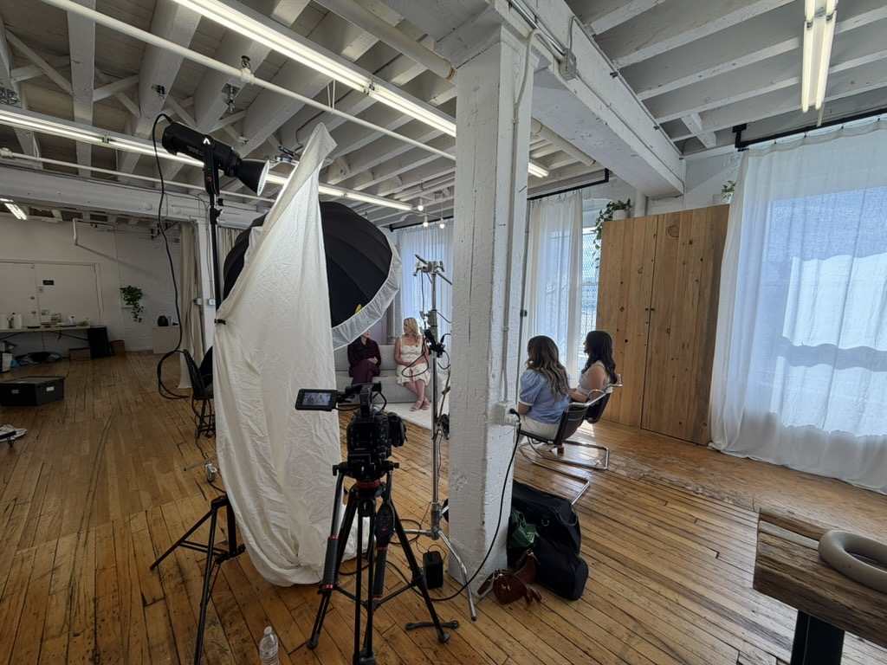
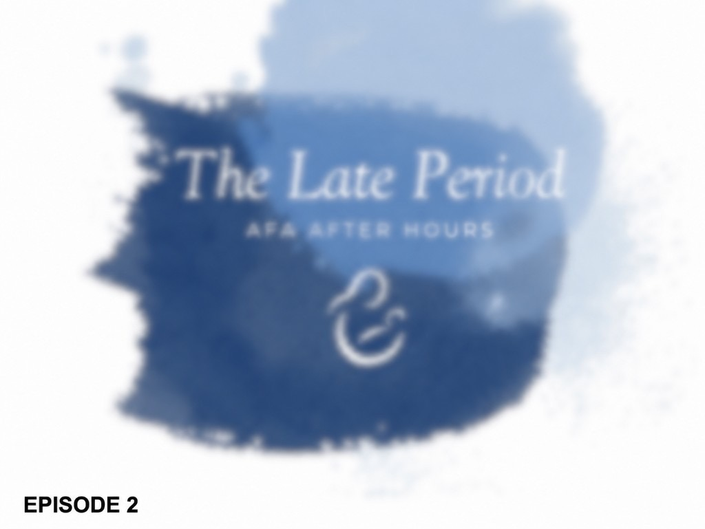
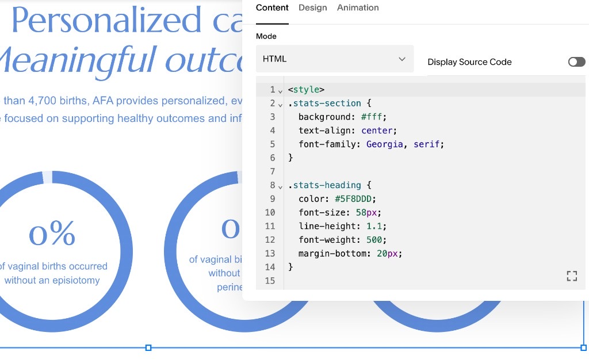

Consulting · Podcast · Website overhaul
I support AFA’s marketing lead on podcast production, media days, branding advice, and — as my main focus now — an ongoing website overhaul and online presence work.
- 2 episodes podcast so far (+ more planned)
- Day-long shoot I helped direct on set
- Website overhaul in progress (main focus)
- Advisor spend, talent, production choices
- Podcast production
- On-set direction
- Brand / visual direction
- Website redesign
- Stakeholder advising
- Social / media days
- Vendor & talent input
Problem
Marketing, podcast, photo/media days, and the website were all moving at once under one lead with a real budget — they needed someone who could help plan, show up on shoot days, advise on spend/talent, and push the digital presence forward.
What I owned
- Helped plan and create podcasts; on shoot day directed talent look (makeup, clothes, themes) with other crew and supported camera/overall visual direction.
- Supported media days and branding/social work; gave advice when asked — e.g. whether a branding spend was worth it, and who to hire (actors as patients, voice actors, camera).
- Light role coordinating people across locations for media days (some flew in); not my main ownership, and I’m not on every shoot.
- Current focus: Leading a comprehensive website overhaul and brand refresh, including SEO optimization, logo design, information architecture, wireframing, UI design, and full website development from the ground up. Responsible for planning, designing, and implementing the live site, including custom code integrations to deliver enhanced functionality and a modern user experience. (Ongoing)



Result
Two episodes produced so far with me on a day-long shoot; more episodes planned while my primary lane has shifted to the website and redesign. Proof here is production support + advisory judgment under a real marketing budget — public traffic metrics aren’t released yet.